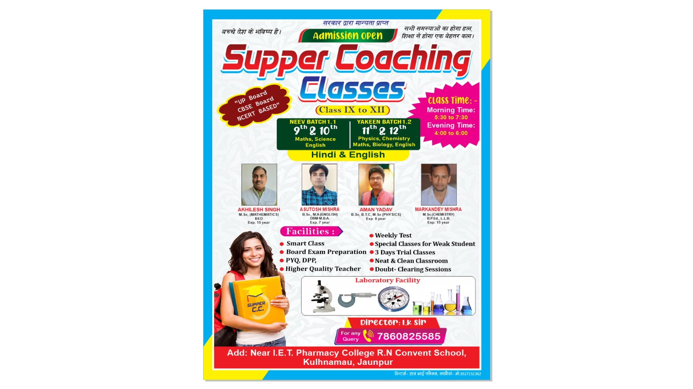

Join us in our journey
Super Coaching Classes
Located in the vibrant hub of Lakhauva Bazar in Jaunpur, is a premier institution dedicated to fostering academic excellence among students preparing for board examinations. With a meticulous focus on nurturing foundational knowledge and honing advanced skills, the institution offers two distinct batches: the Neev batch for students in classes 9 and 10, and the Yakeen batch for students in classes 11 and 12. These batches cater to students across the UP, CBSE, and ICSE boards, ensuring a comprehensive preparation strategy tailored to diverse educational requirements.
Innovative Teaching Methods and Modern Facilities
The institution prides itself on employing innovative teaching methods that make learning an engaging and enjoyable experience. Interactive classroom sessions, practical demonstrations, and the use of modern technology are some of the techniques used to enhance the learning process. Super Coaching Classes is equipped with state-of-the-art facilities, including well-stocked libraries, advanced laboratories, and comfortable classrooms, creating an ideal learning environment for students.
Commitment to Excellence
At the heart of Super Coaching Classes is a commitment to excellence. The institution’s mission is to provide quality education that empowers students to achieve their full potential and succeed in their academic and professional endeavors. This commitment is reflected in the dedication and passion of the faculty members, the comprehensive and rigorous curriculum, and the supportive and nurturing learning environment.
Community Engagement and Extra-Curricular Activities
Understanding the importance of a well-rounded education, Super Coaching Classes encourages students to engage in extra-curricular activities and community service. These activities not only enhance students’ social and leadership skills but also instill a sense of responsibility and civic awareness. Regular workshops, seminars, and cultural events are organized to provide students with opportunities to explore their interests and talents beyond the classroom.
Conclusion
Super Coaching Classes in Lakhauva Bazar, Jaunpur, stands as a beacon of academic excellence and holistic development. With its meticulously crafted batches—Neev for classes 9 and 10, and Yakeen for classes 11 and 12—the institution ensures comprehensive preparation for board examinations across UP, CBSE, and ICSE boards. The distinguished faculty, comprising seasoned educators like Akhilkesh Singh, Ashutosh Mishra, Aman Yadav, and Markandey Mishra, bring a wealth of knowledge and innovative teaching methods to the classroom. The institution’s commitment to excellence, modern facilities, and emphasis on holistic development make it a premier choice for students aspiring to achieve academic success and personal growth.
 Super Coaching Classes
Super Coaching Classes